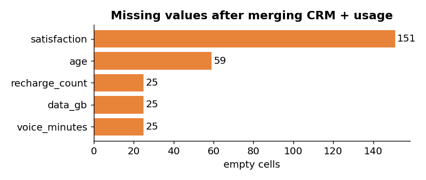
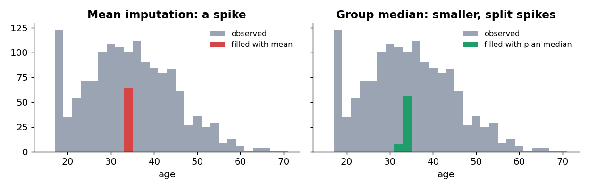
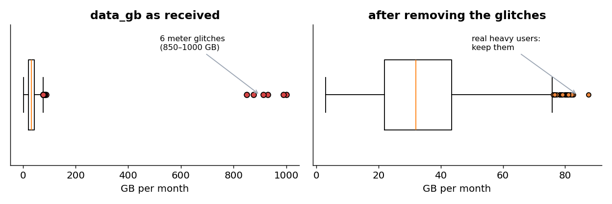
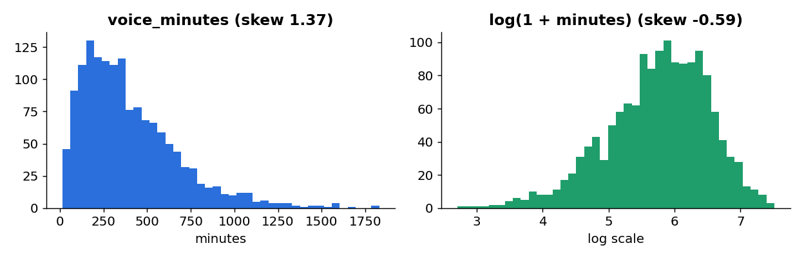
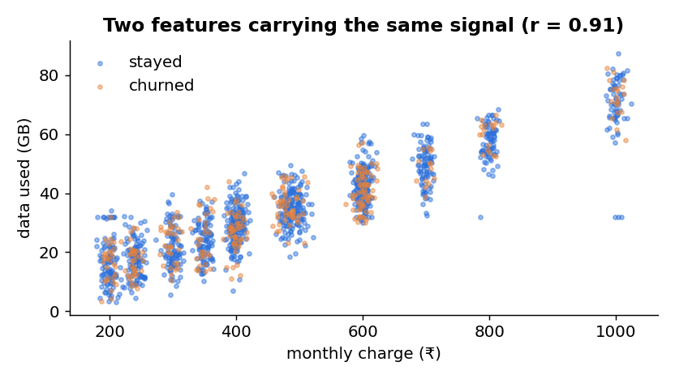
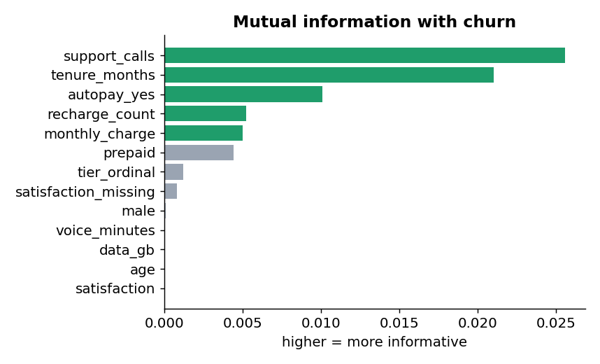
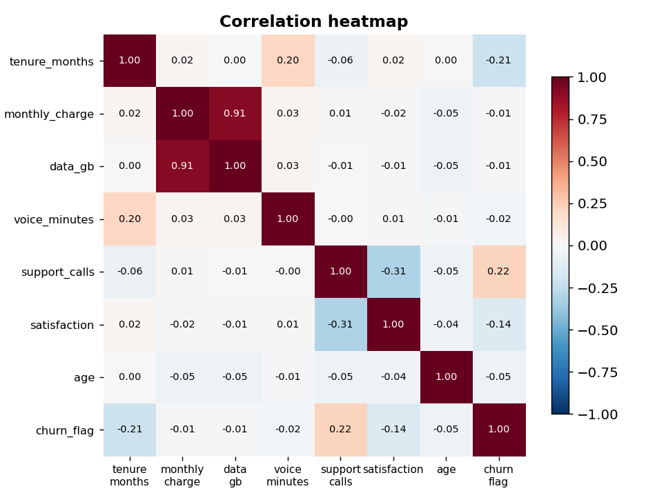
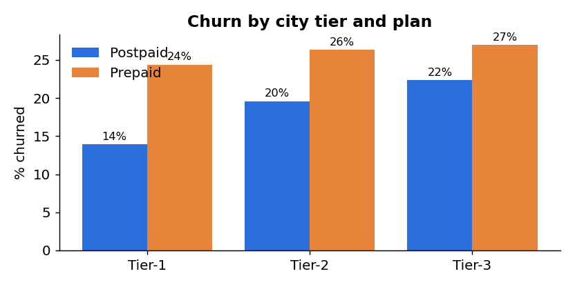

Why data preparation matters
A model can only learn what the data shows it. If “Prepaid” and “PREPAID” are different values, the model sees two plans. If one customer is recorded at 999.9 GB, the average data use jumps by about 4 GB. If unhappy customers skip the survey, “satisfaction” looks better than it is. Garbage in, garbage out. Practitioners routinely report that preparing data takes more of a project’s time than modelling it.
Six dimensions of data quality
Use these six words as a checklist on every new dataset. The SwiftTel column shows what we found in today’s files.
| Dimension | Question to ask | SwiftTel finding | Fix |
|---|---|---|---|
| Uniqueness | Is any record stored twice? | 15 exact duplicate rows in the CRM export | drop duplicates |
| Consistency | Is the same thing always written the same way? | 7 spellings of 2 plans, 6 of 2 genders, “yes” and “Yes” | standardise labels |
| Validity | Does each value have the right type and format? | 151 charges with “₹”, 73 ending “.00”; 296 dates as DD/MM/YYYY | convert types, parse dates |
| Accuracy | Is the value true? | ages 0, 151, 234; charges ₹23,900–₹79,900; 6 usage values near 1,000 GB | fix, or set missing |
| Completeness | Is anything missing? | age 59 blank, satisfaction 151 blank, 25 customers with no usage record | understand why, then impute |
| Timeliness | Is it recent enough for the question? | December 2024 usage for a 1 January 2025 snapshot | ✔ fine |
Data collection
Data for a predictive project usually comes from several systems that were never designed to work together.
| Source | Example | Watch out for |
|---|---|---|
| Internal databases | CRM, billing, ERP, point-of-sale (queried with SQL) | different IDs and codes in each system |
| System logs | app clicks, network usage, call records | huge volume, glitches, time zones |
| Surveys and forms | satisfaction survey, KYC form | skipped questions, typing errors, default values |
| APIs | payment gateway, weather, maps | rate limits, changing formats |
| Sensors / IoT | machine vibration, smart meters | drift, missing readings when offline |
| Web scraping | competitor prices, public reviews | website terms, privacy law, page changes |
| Third-party data | credit bureau scores, purchased demographics | cost, consent, unknown quality |
Primary data is collected for your exact question (a churn survey). Secondary data was collected earlier for another purpose (billing records). Secondary data is cheaper but may not measure exactly what you need.
Joining sources: keys, aggregation and join types
| Join | Keeps | SwiftTel result |
|---|---|---|
| Inner | only IDs in both tables | 1,475: loses 25 customers silently |
| Left | every row of the left table | 1,500, with 25 blank usage rows |
| Right | every row of the right table | 1,475 |
| Full outer | every ID from either table | 1,500 (no orphans here) |
- Key mismatch: 10 usage rows say
st10007, the CRM saysST10007. Upper-case before joining, or 10 customers lose their usage. - Wrong grain: tickets have one row per ticket (1,840 rows). Joining them directly would copy each customer once per ticket. Aggregate first: one count per customer.
- Absence ≠ missing: a customer with no ticket made 0 calls (a fact). A customer with no usage row has unknown usage (missing).
usage["customer_id"] = usage["customer_id"].str.upper()
calls = tickets.groupby("customer_id").size().rename("support_calls")
df = crm.merge(usage, on="customer_id", how="left").merge(calls, on="customer_id", how="left")
df["support_calls"] = df["support_calls"].fillna(0).astype(int)
print("Merged:", df.shape)
print(df.isna().sum()[df.isna().sum() > 0])
Merged: (1500, 14) age 59 satisfaction 151 data_gb 25 voice_minutes 25 recharge_count 25

Data cleaning
Read raw files as text first (dtype=str). If pandas guesses types, it silently turns “₹399” into a text column and blank ages into NaN, hiding the problems you need to see.
crm = pd.read_csv("crm_customers.csv", dtype=str, keep_default_na=False)
print(crm.head(3))
print("Exact duplicate rows:", crm.duplicated().sum())
customer_id gender age city_tier plan_type join_date monthly_charge autopay satisfaction churned 0 ST10849 F 44 Tier-3 Prepaid 2022-08-01 599 No 4 No 1 ST11402 M 34 Tier-3 Prepaid 2024-09-29 479 No 5 No 2 ST11135 male 34 Tier-2 Prepaid 16/12/2023 479 No 5 Yes Exact duplicate rows: 15
Remove duplicates first
Every later count (churn rate, averages) would include the 15 copies twice. Remove exact duplicates before anything else: 1,515 → 1,500 rows. Watch for near-duplicates too (same customer, different spelling), which drop_duplicates() cannot see.
Standardise labels
crm["plan_type"] = (crm["plan_type"].str.lower().str.replace("-", "", regex=False)
.map({"prepaid": "Prepaid", "postpaid": "Postpaid"}))
crm["gender"] = crm["gender"].str.strip().str.lower().map({"m": "Male", "male": "Male", "f": "Female", "female": "Female"})
crm["churned"] = crm["churned"].str.title()
Plan labels before: {'Prepaid': 807, 'Postpaid': 498, 'prepaid': 54, 'Pre-paid': 45, 'postpaid': 41, 'PREPAID': 28, 'Post-paid': 27}
Plan labels after : {'Prepaid': 934, 'Postpaid': 566}
Note the order inside the chain: strip() removes the hidden space in "female ", lower() merges capitals, and map() sends each spelling to one official label. Any spelling you forgot becomes NaN, which is a useful alarm.
Fix types and formats
crm["monthly_charge"] = pd.to_numeric(crm["monthly_charge"].str.replace("₹", "", regex=False))
crm["join_date"] = pd.to_datetime(crm["join_date"], format="mixed", dayfirst=True)
crm["age"] = pd.to_numeric(crm["age"].replace("", np.nan))
print(crm.dtypes)
customer_id object gender object age float64 city_tier object plan_type object join_date datetime64[ns] monthly_charge float64 autopay object satisfaction float64 churned object
04/05/2024 is 4 May in India but April 5 in the USA. Always state the format (dayfirst=True) and spot-check a few rows. A wrong date silently changes every tenure you compute from it.Handling missing values
Before choosing how to fill a gap, ask why it is there. Statistician Donald Rubin (1976) named three mechanisms:
SwiftTel: the 45 survey gaps already present in Unit 1 were random (a page that failed to load).
Safe: dropping a few rows does not bias results.
SwiftTel: age is missing for 6.0% of prepaid but 1.4% of postpaid customers (prepaid KYC forms are often incomplete).
Fix: impute using the related column (median age within each plan).
SwiftTel: unhappy customers skip the survey. Churn is 27.8% when satisfaction is blank vs 22.1% when filled.
Fix: keep a “was missing” flag; the gap itself carries information.
print("Age missing by plan (%):", (df.groupby("plan_type")["age"].apply(lambda s: s.isna().mean()) * 100).round(1).to_dict())
print("Churn % if satisfaction missing / present:",
round(df.loc[df["satisfaction"].isna(), "churned"].eq("Yes").mean() * 100, 1),
round(df.loc[df["satisfaction"].notna(), "churned"].eq("Yes").mean() * 100, 1))
Age missing by plan (%): {'Postpaid': 1.4, 'Prepaid': 6.0}
Churn % if satisfaction missing / present: 27.8 22.1
(These age figures include the 5 impossible ages that we set to missing in Section 5.)
Methods for handling missing values
| Method | How | Good when | Risk |
|---|---|---|---|
| Listwise deletion | drop rows with any gap | few gaps, MCAR | loses data; biased if not MCAR |
| Drop the column | remove the feature | mostly empty (say > 60%) and unimportant | throws away signal |
| Mean imputation | fill with the average | quick baseline, symmetric data | shrinks spread, makes a spike |
| Median imputation | fill with the middle value | skewed data, outliers present | same spike problem |
| Mode imputation | fill with the most common value | categorical columns | over-represents one category |
| Group imputation | median within a related group | MAR | needs a good grouping column |
| Indicator flag | add x_was_missing = 1/0, then fill | MNAR or unknown | one more column |
| Model-based | predict the gap from other columns (KNN imputer, regression) | strong relationships between columns | slower; can leak if done before the train/test split |
| Domain rule | no ticket → 0 calls | the “gap” is really a known value | none, if the rule is true |
sd_new = sd_old × √((n_obs − 1) / (n − 1)) = 10.22 × √(1435 / 1499) = 10.22 × 0.978 = 10.00That is exactly what pandas printed:
Age std: observed 10.22, after mean fill 10.00. A model then thinks ages are more alike than they really are.

df["age_was_missing"] = df["age"].isna().astype(int) # keep the fact that it was missing
df["age"] = df["age"].fillna(df.groupby("plan_type")["age"].transform("median"))
df["satisfaction_missing"] = df["satisfaction"].isna().astype(int)
df["satisfaction"] = df["satisfaction"].fillna(df["satisfaction"].median())
MCAR, MAR or MNAR?
Outlier detection
An outlier is a value far from the rest. It may be an error (a typo, a meter glitch) or a genuine extreme (a heavy user). Detection rules only flag candidates; you decide what they are.
Three detection rules
| Rule | Formula | Strength | Weakness |
|---|---|---|---|
| IQR (box-plot) rule | flag x < Q1 − 1.5·IQR or x > Q3 + 1.5·IQR | robust: quartiles barely move when outliers are added | flags many genuine values in skewed data |
| z-score rule | z = (x − x̄)/s; flag |z| > 3 | simple, good for bell-shaped data | x̄ and s are themselves pulled by outliers (masking) |
| Domain rule | age 18–100; charge ≤ ₹999; data ≤ 100 GB | uses real business knowledge | needs someone who knows the business |
Fences: 21.90 − 1.5 × 21.75 = −10.73 and 43.65 + 1.5 × 21.75 = 76.28. 28 values lie outside.
z-scores: x̄ = 37.76, s = 59.18. For the largest value, z = (999.9 − 37.76) / 59.18 = 16.3. Only 6 values have |z| > 3.
Why so different? The six glitches inflated s from about 16 to 59, so genuine heavy users at 80+ GB no longer look unusual to the z rule. That is masking.
data_gb IQR fences: [-10.73, 76.28] -> flagged 28 data_gb |z| > 3 -> flagged 6 data_gb > 100 GB (impossible on any plan): 6 monthly_charge > 999 (no such plan): 4 [59900.0, 23900.0, 79900.0, 34900.0] age outside 18-100: 5 [0.0, 0.0, 0.0, 151.0, 234.0]

Treatment depends on the cause
| Cause | SwiftTel case | Treatment |
|---|---|---|
| Typo you can explain | ₹59,900 is ₹599 with an extra “00” | Fix it (÷ 100) |
| Impossible value | age 0 / 151 / 234; 999.9 GB | Set to missing, then impute like any gap |
| Genuine extreme | a heavy user at 87.5 GB | Keep. For sensitive models, cap (winsorize at the 1st/99th percentile) or log-transform |
| Different population | a corporate account with hundreds of lines | model it separately |
| The event you are looking for | fraud, network attack | Keep: the outliers are the signal |
What would you do with it?
Data transformation
Transformation reshapes clean data so models can use it well: putting numbers on comparable scales, taming long tails, turning text categories into numbers, and creating more useful features.
Scaling
x′ = (x − min) / (max − min)₹599 → (599 − 199) / (999 − 199) = 400 / 800 = 0.50
z-score (standardization):
z = (x − x̄) / s₹599 → (599 − 474.55) / 211.44 = 0.589
| Model | Needs scaling? |
|---|---|
| KNN, K-means (distances) | Yes |
| Logistic / linear regression with regularization, neural nets | Yes |
| Decision trees, random forest, boosting | No |
customer_id monthly_charge charge_minmax charge_z tenure_months tenure_band
ST10849 599.0 0.50 0.589 29 25-48
ST11402 479.0 0.35 0.021 3 0-6
ST11135 479.0 0.35 0.021 12 7-12
Why scale? Without it, a distance between two customers is dominated by monthly charge (hundreds of rupees) and ignores tenure (tens of months). Scaling puts every feature on comparable footing. Min-max is fragile: a single ₹79,900 typo would squash every real charge into 0.00–0.01.
Log transform for skewed data
Voice minutes have a long right tail: most customers talk 200–550 minutes, a few over 1,500. The mean (401) sits well above the median (338). log(1 + x) compresses big values more than small ones; the “1 +” keeps log(0) from breaking.

Binning, encoding and derived features
| Technique | What it does | SwiftTel example | Use when |
|---|---|---|---|
| Binning (discretization) | number → ordered groups | tenure → 0-6, 7-12, 13-24, 25-48, 49-72 | relationship is step-like; readability |
| One-hot encoding | nominal → one 0/1 column per category | plan → plan_Prepaid, plan_Postpaid | categories have no order |
| Ordinal encoding | ordered categories → 1, 2, 3 | Tier-1 → 1, Tier-2 → 2, Tier-3 → 3 | categories have a real order |
| Binary encoding | two categories → 1/0 | autopay Yes → 1 | exactly two values |
| Derived feature | build a new column from others | tenure from join_date; support_calls from ticket rows; GB per ₹100 | domain knowledge suggests it |
| Date parts | date → month, weekday, days since | join month (festive-season joiners?) | seasonality matters |
- Fake order. Encoding plan as Prepaid = 1, Postpaid = 2 tells a linear model that Postpaid is “twice” Prepaid. Use one-hot for nominal data.
- Dummy-variable trap. plan_Prepaid + plan_Postpaid always equals 1, so a linear model cannot separate their effects. Drop one of them (
drop_first=True).
How would you encode it?
Feature selection
More columns are not always better. Irrelevant or duplicate features add noise, invite overfitting, slow training, cost money to collect and make models harder to explain. Feature selection keeps the useful few.
| Family | How it works | Methods | Pros | Cons |
|---|---|---|---|---|
| Filter | score each feature on its own against the target | correlation, chi-square, mutual information, variance threshold | very fast, model-free | ignores interactions and redundancy |
| Wrapper | train a model on different feature subsets | forward selection, backward elimination, RFE | finds sets that work together | slow; can overfit |
| Embedded | selection happens during model training | L1 (lasso) regularization, tree feature importance | efficient, accounts for other features | tied to one kind of model |
Filter 1 · correlation with the target, and redundancy
Filter 1 · correlation with churn (by size): support_calls 0.224 tenure_months -0.212 autopay_yes -0.139 satisfaction -0.137 plan_Prepaid 0.093 recharge_count 0.062 age -0.054 tier_ordinal 0.048 satisfaction_missing 0.041 voice_minutes -0.024 data_gb -0.014 male 0.014 monthly_charge -0.013 Redundancy check: r(data_gb, monthly_charge) = 0.911

Pearson r runs from −1 (perfect falling line) through 0 (no straight-line link) to +1 (perfect rising line). Support calls (+0.22) and tenure (−0.21) are the strongest single signals; monthly charge barely matters on its own.
Multicollinearity: data_gb and monthly_charge correlate at 0.91. Keeping both adds little information and makes regression coefficients unstable. Keep one (usually the one that is easier to explain or measure).
Σ(x − x̄)(y − ȳ) = 4 + 0 + 0 + 0 + 2 = 6; Σ(x − x̄)² = 10; Σ(y − ȳ)² = 6.
r = 6 / √(10 × 6) = 0.775.
Filter 2 · chi-square test for categorical features
Is churn independent of plan type? Compare the observed counts with the counts you would expect if there were no link.
| Observed (expected) | Churn: Yes | No | Total |
|---|---|---|---|
| Postpaid | 100 (128.29) | 466 (437.71) | 566 |
| Prepaid | 240 (211.71) | 694 (722.29) | 934 |
| Total | 340 | 1,160 | 1,500 |
Every cell is 28.29 away from its expected value, so (O − E)² ≈ 800.3 for each.
χ² = 800.3/128.29 + 800.3/437.71 + 800.3/211.71 + 800.3/722.29 = 6.24 + 1.83 + 3.78 + 1.11 = 12.96.
Degrees of freedom = (rows − 1)(columns − 1) = 1; the 5% critical value is 3.84. 12.96 > 3.84 → plan type and churn are related.
Filter 2 · chi-square plan_type chi2 = 12.96 p = 0.0003 keep Filter 2 · chi-square autopay chi2 = 28.87 p = 0.0000 keep Filter 2 · chi-square city_tier chi2 = 3.57 p = 0.1675 weak Filter 2 · chi-square gender chi2 = 0.31 p = 0.5786 weak
Filter 3 · mutual information, and the wrapper and embedded views

Filter 3 · mutual information (top 5): {'support_calls': 0.0256, 'tenure_months': 0.021,
'autopay_yes': 0.0101, 'recharge_count': 0.0052, 'monthly_charge': 0.005}
Wrapper · RFE keeps: ['tenure_months', 'monthly_charge', 'support_calls', 'plan_Prepaid', 'autopay_yes']
RFE (recursive feature elimination) trains a logistic regression, drops the weakest feature, retrains, and repeats until five remain. Notice it keeps monthly_charge but drops its twin, data_gb: wrappers handle redundancy that filters miss.
An L1 (lasso) logistic regression with strong regularization keeps only four non-zero weights: tenure, support calls, autopay and satisfaction.
| Feature | |r| | χ² / MI | RFE | L1 | Verdict |
|---|---|---|---|---|---|
| support_calls | 0.224 | MI #1 | ✔ | ✔ | keep |
| tenure_months | 0.212 | MI #2 | ✔ | ✔ | keep |
| autopay | 0.139 | χ² 28.9 | ✔ | ✔ | keep |
| plan type | 0.093 | χ² 13.0 | ✔ | – | keep |
| satisfaction | 0.137 | – | – | ✔ | keep (+ missing flag) |
| data_gb | 0.014 | – | – | – | drop: twin of charge |
| gender | 0.014 | χ² 0.31 | – | – | drop |
Exploratory Data Analysis (EDA)
EDA, a term popularised by statistician John Tukey (1977), means looking at the data from many angles before modelling: checking assumptions, finding patterns, spotting problems and forming questions.
| Level | Question | Numbers | Charts |
|---|---|---|---|
| Univariate | What does one column look like? | mean, median, mode, sd, IQR, min/max, skewness, counts | histogram, box plot, bar chart |
| Bivariate | How do two columns relate? | correlation r, cross-tab, group means | scatter, grouped bars, box plot by group |
| Multivariate | How do many columns relate together? | correlation matrix, pivot tables | heatmap, pair plot, faceted charts |
Univariate: the prepared table
count mean std min 25% 50% 75% max age 1500.0 34.0 10.0 18.0 27.0 34.0 41.0 70.0 tenure_months 1500.0 21.4 16.4 1.0 9.0 17.0 30.0 72.0 monthly_charge 1500.0 474.5 211.4 199.0 299.0 399.0 599.0 999.0 data_gb 1500.0 34.1 16.1 3.0 22.0 32.0 43.3 87.5 voice_minutes 1500.0 401.1 279.0 14.0 194.8 338.0 543.2 1830.0 support_calls 1500.0 1.2 1.2 0.0 0.0 1.0 2.0 7.0 Customers aged exactly 18, 19, 20: [123, 23, 12] <- a pile-up worth checking
- Mean vs median: voice minutes 401 vs 338 and tenure 21.4 vs 17: both right-skewed (a long tail of large values).
- Pile-ups: 123 customers are exactly 18, but only 23 are 19. Real age data does not jump like that. Likely the form’s minimum or default value. EDA does not fix this; it raises a question for the data owner.
- Range check: after cleaning, every value is plausible (age 18–70, charge ₹199–₹999, data ≤ 87.5 GB).
Bivariate and multivariate


The heatmap also shows support calls vs satisfaction: r = −0.31. Unhappy customers call more. So when both features enter a model, part of their effect is shared: a reason to interpret coefficients carefully in Unit 3.
Visualization techniques
Choose the chart from the question, not from what looks impressive.
| Question | Best chart | Python (matplotlib / pandas) |
|---|---|---|
| How is one number distributed? | Histogram (or density curve) | plt.hist(df["voice_minutes"], bins=40) |
| Centre, spread and outliers, or compare groups? | Box plot | df.boxplot(column="tenure_months", by="churned") |
| Compare counts or rates across categories? | Bar chart (grouped or stacked) | rate.plot.bar() |
| Do two numbers move together? | Scatter plot | plt.scatter(df["monthly_charge"], df["data_gb"]) |
| Many correlations at once? | Heatmap or pair plot | plt.imshow(df.corr()) |
| How does something change over time? | Line chart | plt.plot(m["t"], m["revenue_lakh"]) |
| Parts of a whole? | Stacked bar (a pie only for 2–4 parts) | counts.plot.barh(stacked=True) |
Pick the right chart
Hands-on lab
Parts A–C run in this page on the real raw files. Part D is the full pipeline in Python, R and SPSS.
Part A · Cleaning pipeline: switch each step on
Part B · Outlier detector
Part C · Imputation comparer (age)
Your tasks
Check your answers
1. With every step off, the 151 charges with “₹” cannot be read and are left out, while the four ×100 typos (₹23,900–₹79,900) push the average to ₹618.70. Parsing (step 3) adds the 151 back (₹605.62); fixing the typos (step 4) gives the true ₹474.55. Churn starts at 22.2% because the 15 duplicates add rows and lower-case “yes” is not counted; removing duplicates gives 22.3%, standardising labels gives the true 22.7%. Step 5 brings the average age from 34.15 to 34.00 and the maximum from 234 to 70. 2. Yes: count before cleaning and duplicates are counted twice while spelling variants are split into separate groups, so rates and group sizes are wrong. Remove duplicates first, standardise next, compute last. 3. IQR (1.5) flags 28 values, z (3) only 6: the six glitches inflate the standard deviation from about 16 to 59, so genuine heavy users no longer look unusual (masking). An IQR multiplier of 2.25 or more flags only the 6 glitches (at 2.0 the 87.5 GB heavy user is still flagged). 4. IQR (1.5) does catch all five impossible ages (fences 6 and 62) but also flags 10 genuine customers aged 63–70. The z rule (3) catches only 151 and 234: the two huge values inflate the sd to 12, so the zeros look normal (masking again). The domain rule “adults are 18–100” catches exactly the 5 errors and nothing else. 5. Mean, median and group median all give sd 10.00 (spread shrinks); hot-deck keeps it at about 10.18, closest to the observed 10.22, because it copies real ages. The catch: results depend on the random draw, and it ignores links with other columns (such as plan). 6. Example answers. Satisfaction: MNAR → median + “was missing” flag. Age: MAR on plan → group median + flag. data_gb, voice_minutes, recharge_count (25 customers with no usage record): probably inactive SIMs → median + flag, and ask the usage team.
Part D · The full pipeline in Python, R and SPSS
CRM export
crm_customers.csv · 1,515 rows
Usage file
usage_dec2024.csv · 1,475 rows
Support tickets
support_tickets_q4_2024.csv · 1,840 rows
Jupyter notebook
8 steps, collect → explore
Python script
python unit2_lab.py
R script
Base R · same 8 steps
Install once: pip install pandas numpy matplotlib scipy scikit-learn. The script saves swifttel_prepared.csv (1,500 × 27) and a four-chart EDA figure. swifttel_prepared_reference.csv is the instructor’s version to compare with.
SPSS · Lab Experiments 2, 3 and 4
| Experiment | Menu path | What to do with SwiftTel |
|---|---|---|
| 2 · Preprocessing | Data → Identify Duplicate Cases | Match on all variables; 15 duplicates are flagged. Keep primary cases only. |
| Transform → Recode into Different Variables | plan_type: “prepaid”, “Pre-paid”, “PREPAID” → “Prepaid” (and so on). Recode age 0, 151, 234 → System-missing. | |
| Variable View → Missing | Declare impossible codes as user-missing, so SPSS ignores them in statistics. | |
| Transform → Replace Missing Values | age: “Median of nearby points” or “Series mean”; compare the results. | |
| 3 · Descriptive statistics | Analyze → Descriptive Statistics → Frequencies / Descriptives / Explore | Mean, median, sd, skewness; histograms and box plots; Explore by churned. |
| 4 · Correlation | Analyze → Correlate → Bivariate (Pearson) | monthly_charge with data_gb: you should get r ≈ 0.91. support_calls with satisfaction: about −0.31. |
Summary and revision
| Topic | Remember this |
|---|---|
| Data quality | Uniqueness, consistency, validity, accuracy, completeness, timeliness |
| Collection | Sources: databases, logs, surveys, APIs, sensors, scraping, third party. Standardise keys, aggregate to the right grain, choose the join (left keeps everyone) |
| Cleaning | Read as text → drop duplicates → standardise labels → fix types and dates → join → check impossible values |
| Missing values | MCAR (chance), MAR (depends on other columns), MNAR (depends on itself). Mean fill shrinks sd (10.22 → 10.00); prefer group medians + a “was missing” flag |
| Outliers | IQR fences Q1 − 1.5·IQR, Q3 + 1.5·IQR; |z| > 3 (beware masking); domain rules. Fix typos, blank impossible values, keep genuine extremes |
| Transformation | Min-max (x − min)/(max − min); z-score (x − x̄)/s; log(1 + x) for right skew; binning; one-hot (nominal) vs ordinal encoding; derived features |
| Feature selection | Filter (r, χ², MI), wrapper (RFE, forward/backward), embedded (L1, tree importance). Drop redundant twins. Select on training data only |
| EDA | Univariate → bivariate → multivariate; compare mean vs median; look for pile-ups and impossible values |
| Visualization | Histogram (distribution), box plot (spread/outliers), bar (categories), scatter (two numbers), heatmap (many correlations), line (time) |